F2 Commander
An orthodox file manager for the modern world
Navigate anything. Local files, cloud storage, archives – all in one terminal interface.
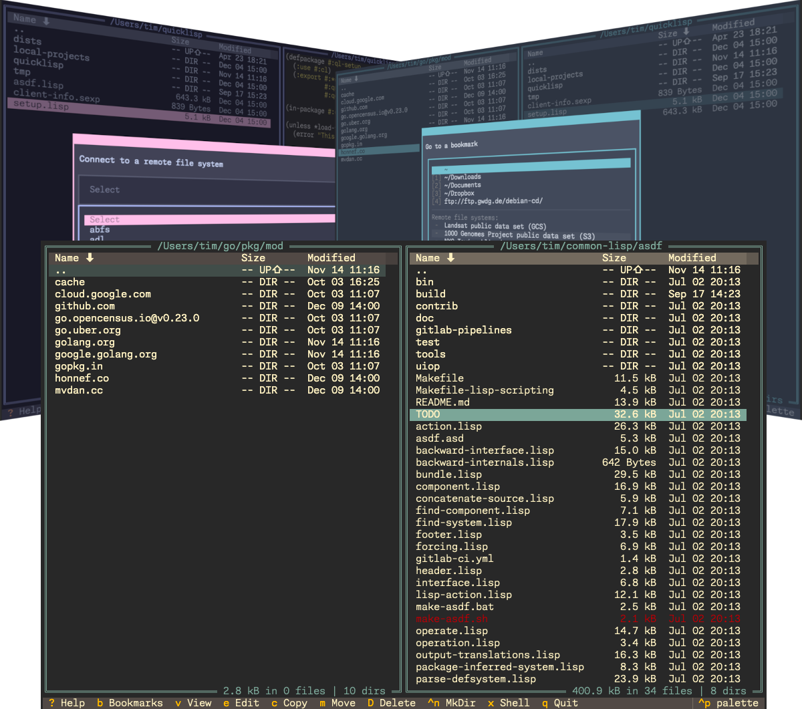
Key Features
Everything you need in a modern file manager
Universal File Systems
Navigate local disks, cloud storage (S3, GCS, ADLS), FTP, SFTP, and more – all the same way.
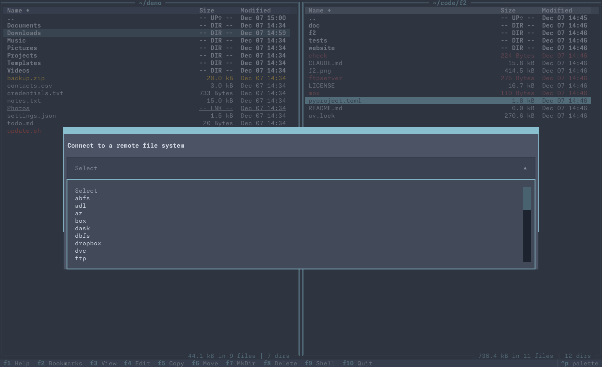
Archive Support
Browse and extract ZIP, TAR, 7-Zip, RAR, ISO, and 20+ archive formats with libarchive.
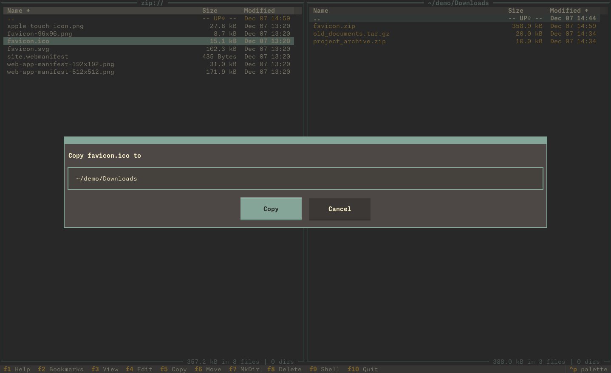
Modern Terminal UI
Rich TUI with file preview, syntax highlighting, image display, and multiple themes.
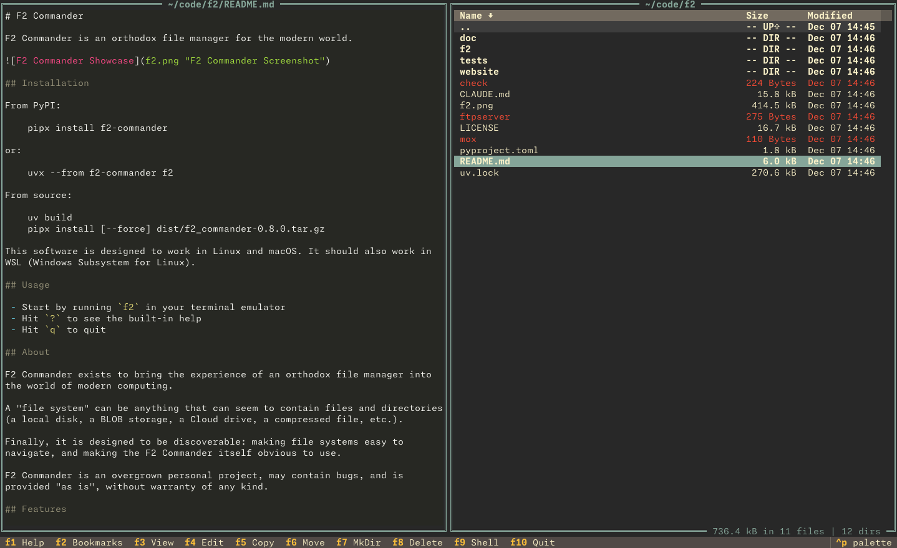
Discoverable Interface
Command palette, built-in help, Vi-like or Fn-key bindings, incremental search.
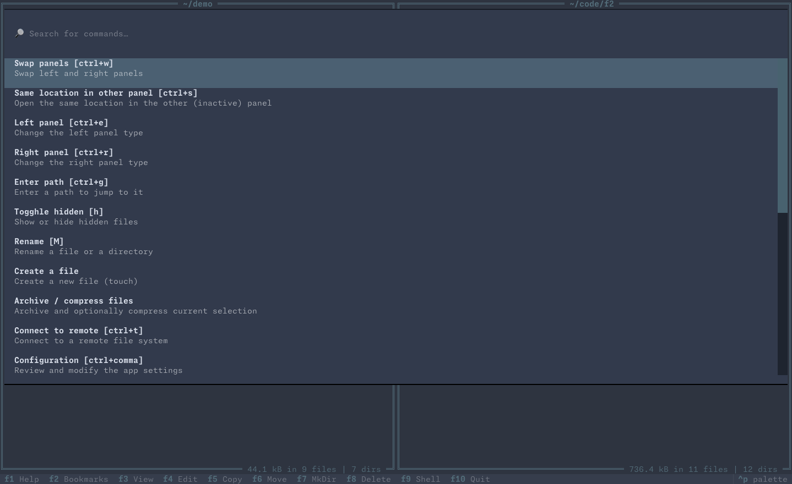
Quick Start
Get F2 Commander running in seconds
# Using pipx (recommended)
pipx install f2-commander
# Or using uvx
uvx --from f2-commander f2
# Run it
f2System requirements: Works on Linux, macOS, and WSL
Why F2 Commander?
Orthodox File Manager Heritage
F2 Commander brings the tried-and-true two-panel interface of classic file managers into the modern era. Navigate with keyboard shortcuts, compare directories side-by-side, copy and move files across local and remote file systems.
Everything is a Filesystem
Whether it's your local disk, an S3 bucket, an FTP server, or a ZIP archive, F2 Commander treats them all the same. Navigate, copy, move, and manage files across any storage system with a unified interface.
Discoverable & Easy to Use
Built-in help, command palette, and intuitive keybindings make F2 Commander approachable for newcomers while remaining powerful for experts.
Modern Python Implementation
Built with Textual framework and fsspec for universal filesystem support. Clean, maintainable code. Contributions are welcome.
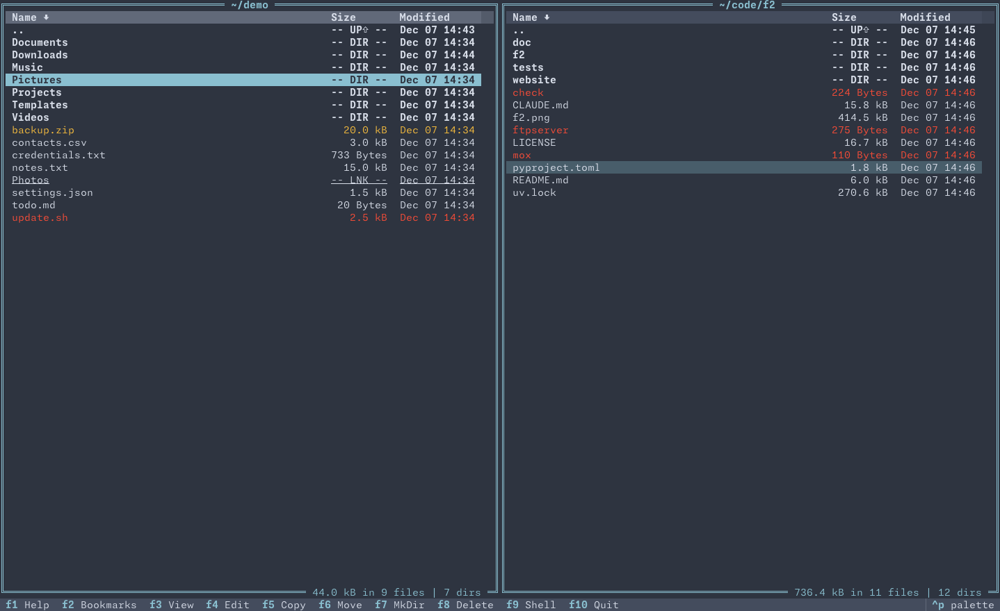
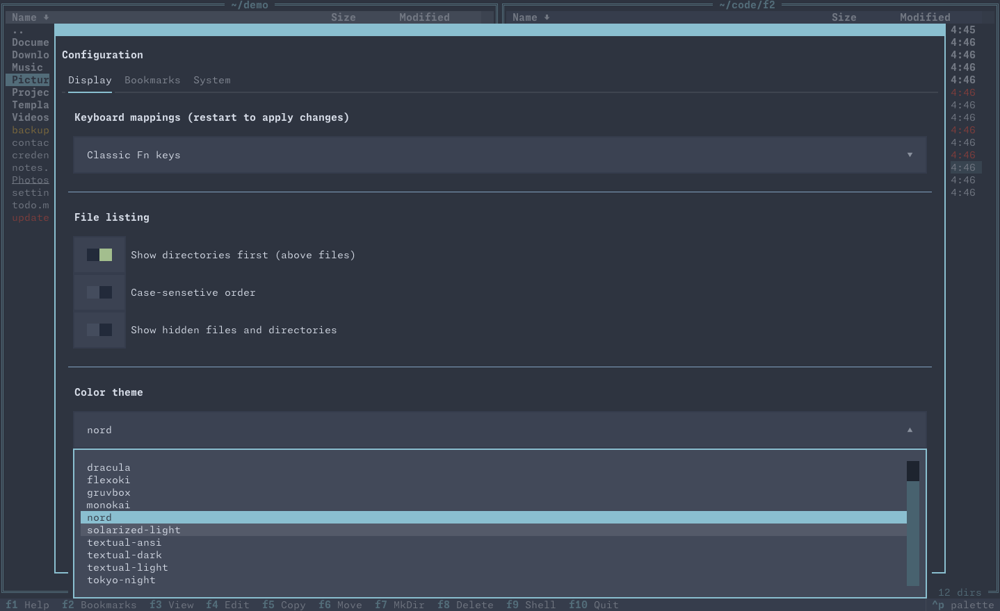
See It in Action
Click on any screenshot to view full size
Two-panel file browsing
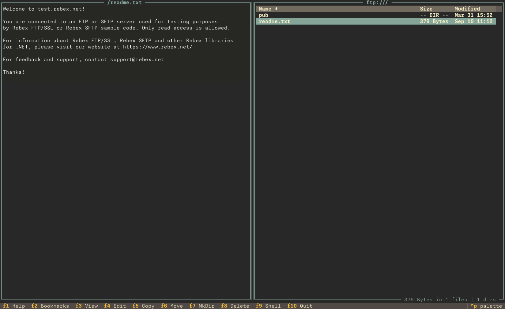
Remote FTP with preview
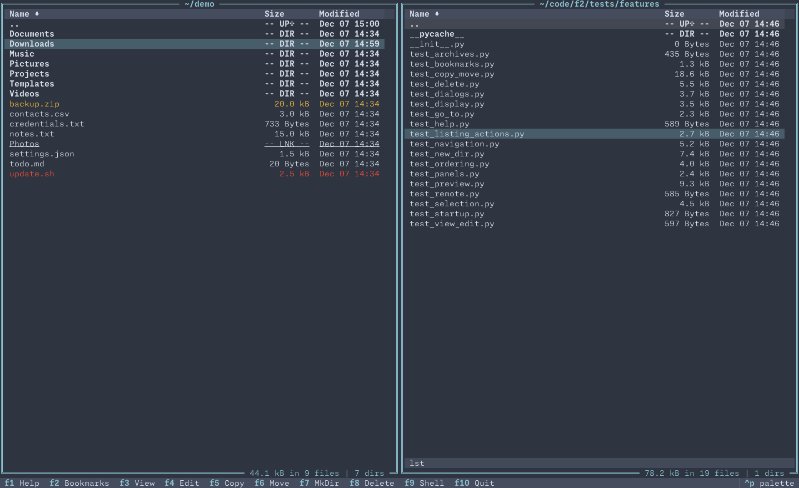
Incremental fuzzy search
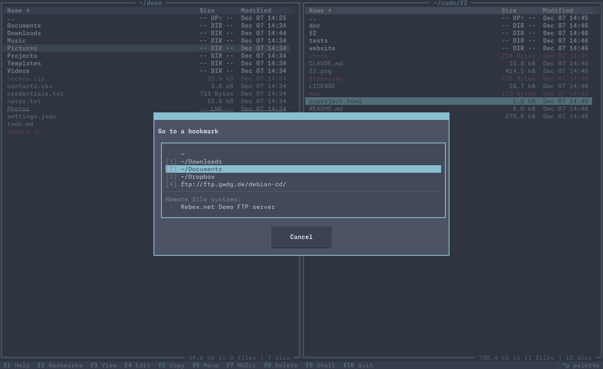
Bookmark management
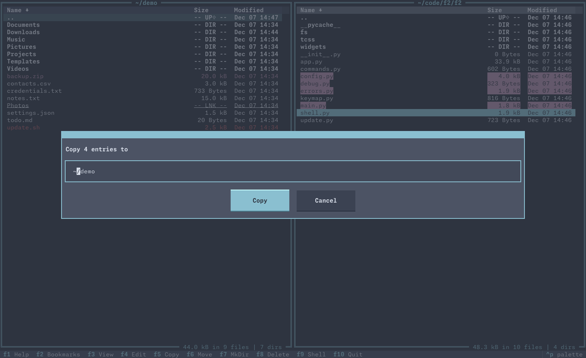
Multiple file selection
Multiple built-in themes
Ready to Get Started?
Install F2 Commander now and experience a modern take on the classic orthodox file manager.